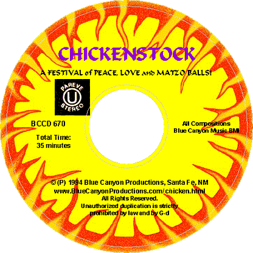
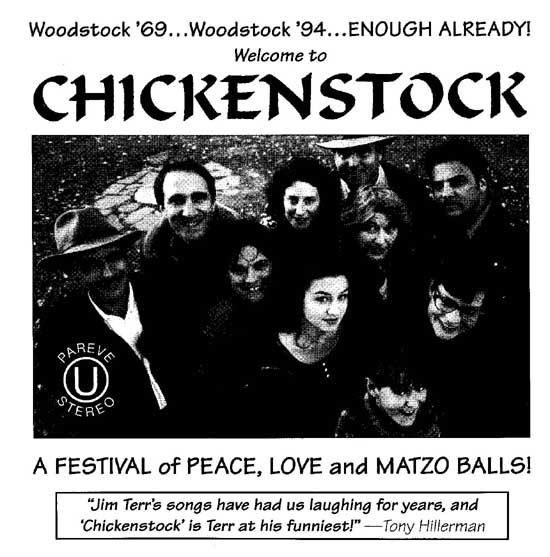

|
(www.BlueCanyonProductions.com)
"Santa Fe's —and therefore the world's—strangest web site. Fascinating sound clips and soul-nourishing content." - Bill Hutchison, staff writer, Santa Fe Reporter (See our Home Page) |
"Chickenstock: A Festival of Peace, Love and
Matzo Balls".
|
Highly-rated Jewish parody of Woodstock. It only
took ten years to do it, but after years of garnering rave reviews
(below), this album is finally available on CD! $15.00.
|
 |

CLICK
HERE TO HEAR "Son of a Rabbi Man"
Note: This song is also on the "Demos
& Diamonds" CD
MP3
Broadcast version

Comments on "Chickenstock"
"Fabulous! The more I hear it the more I like it. It's charming, funny and wonderful. I think it's going to be a big, big hit!"-Len Belzer, producer, "The Comedy Hour" (syndicated), NYC
"It's funny, it's healthy, it's clean, and it's not evil spirited. It's fun...you should be selling thousands and thousands. It's gonna be a big, big national hit." -Mark Scheinbaum, WFTL, Fort Lauderdale
Tremendous response! -Lee Fowler program, WJNO, West Palm Beach
"A raucous and clever piece of Jewish humor...people from other backgrounds should have no trouble getting it. Try it, you'll like it" -Rick Nathanson, Albuquerque Journal
"Most entertaining" -Aaron Hirt-Manheimer, editor, Reform Judaism
"It's a classic!" -Paul Cassiday, WGY Radio, Schenectady
"First there was Woodstock...Now there's 'Chickenstock'" -The Link, Jewish community newspaper, Albuquerque
"A funny takeoff...the humor is clean, and lovingly presented." -Michael Weitz, The Dallas Morning News
"Quirky, nutty, amusing...stuffed with musical variety, Jewish stereotypes and wacky titles and send-ups ("It's Ennui, Babe," "Jewish Penicillin") and an enthusiastic cast (Michael Jackman and Lisa Marie Preslow, Garth Brookmeyer and the Kosher Kowboys). This Woodstock parody is for anyone who appreciates offbeat humor and a good chuckle."-Hadassah Magazine
"For Jews and non-Jews it just puts tears in your eyes, it's so funny.'It's Ennui, Babe' is the funniest thing I've ever heard in my life" -Adam Clatsoff, WWNN-AM, Coral Springs/Ft. Lauderdale
"Terrific!" -Mario Cuomo